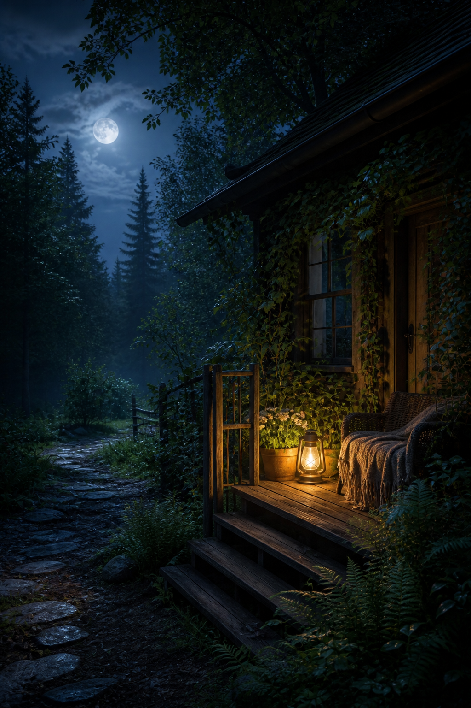
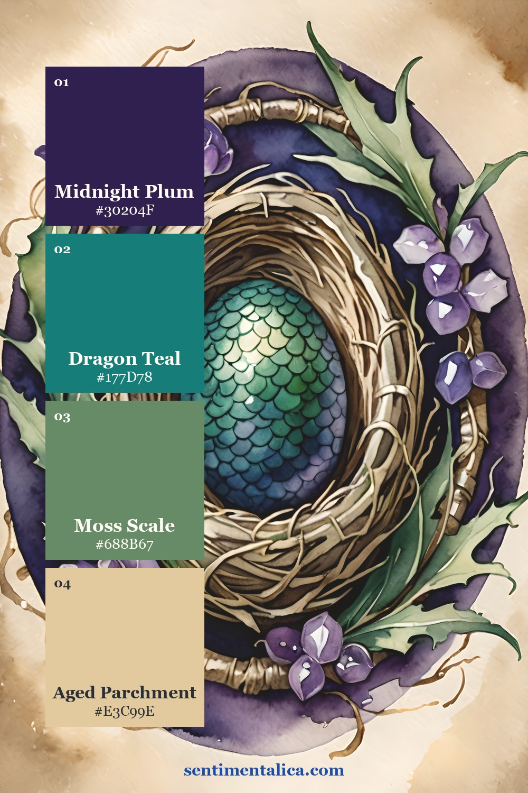
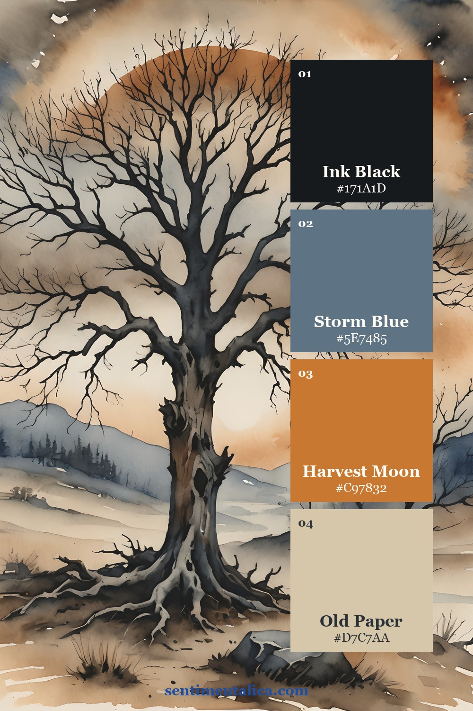
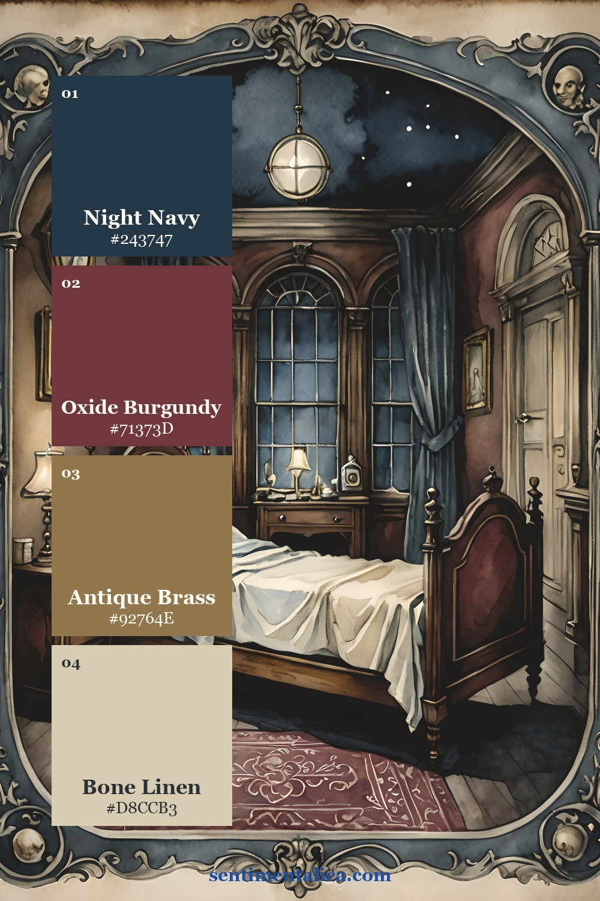
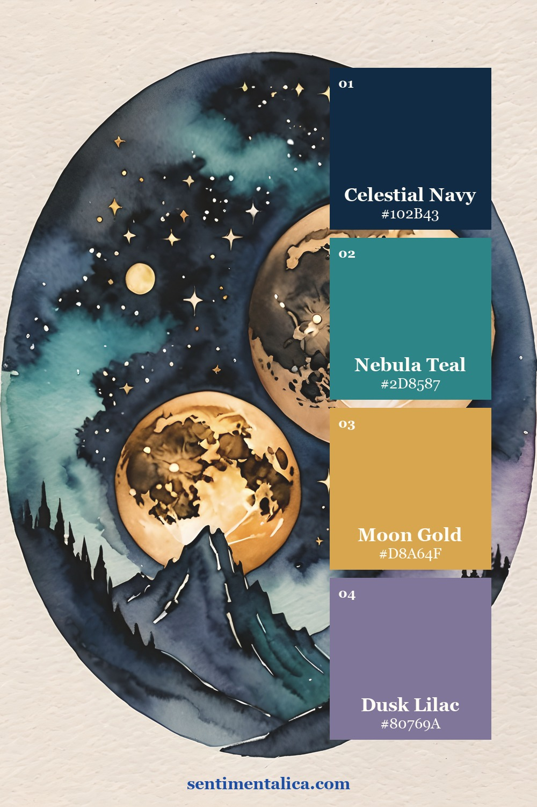
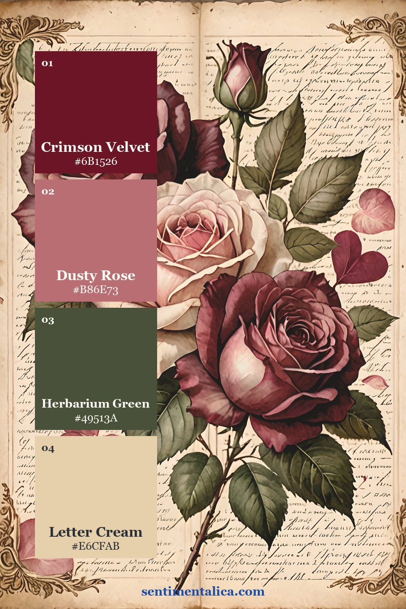

Halloween colour does not have to mean the same orange, purple, and black on every page. These five palettes were sampled from five real Sentimentalica printable collections. Each one gives you a dark anchor, a supporting colour, a warm or luminous accent, and a paper-friendly neutral. Use the HEX values for digital work or match them by eye with scraps already on your desk.

Dragon Hall: enchanted plum and teal

Dragon Hall is the most fantastical palette in this group. Let Midnight Plum hold the background, use Dragon Teal for the focal detail, and soften both with Moss Scale and Aged Parchment. It suits moon pockets, imagined specimens, forest maps, and pages that feel magical without becoming sugary.
Tattered Ink: storm, paper, and harvest moon

Tattered Ink is the clearest traditional Halloween direction, but the muted Storm Blue keeps it sophisticated. Use Old Paper across most of the page, Ink Black for branches or typography, and Harvest Moon only in two or three small places. This is a strong choice for old-house stories, October photographs, and distressed labels.
Ward Whisper: a quiet gothic room

Ward Whisper leans into gothic interiors. Night Navy and Oxide Burgundy provide weight; Antique Brass suggests old frames, keys, and lamp light; Bone Linen leaves room for writing. Try it for a haunted-room file, a secret-letter spread, or an elegant scrapbook page after dark.
Stellar Dusk: celestial Halloween

Stellar Dusk replaces pumpkins with moons and distant light. Keep Celestial Navy dominant, place Nebula Teal in broad soft areas, and reserve Moon Gold for stars, thread, or tiny labels. Dusk Lilac bridges the cool colours and gives the page a dreamy edge.
Crimson Vow: romantic dark florals

Crimson Vow is for romantic Halloween pages, gothic correspondence, and botanical mysteries. Crimson Velvet is powerful, so let Letter Cream occupy most of the composition. Use Herbarium Green as the stabilising dark and Dusty Rose as the transition between floral imagery and aged paper.
How to use any one of these palettes
Choose one palette and assign proportions before you begin: roughly half paper neutral, one quarter dark anchor, one fifth supporting colour, and a final small accent. Do not try to use all five palettes on one spread. Their purpose is to remove decisions and make mixed materials feel as though they came from the same world.
Every product image in this article is presented as its complete palette card, and each card links directly to the corresponding listing. For more colour-led journal ideas, visit the Sentimentalica journal archive.